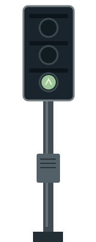
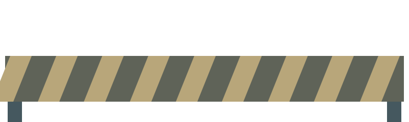
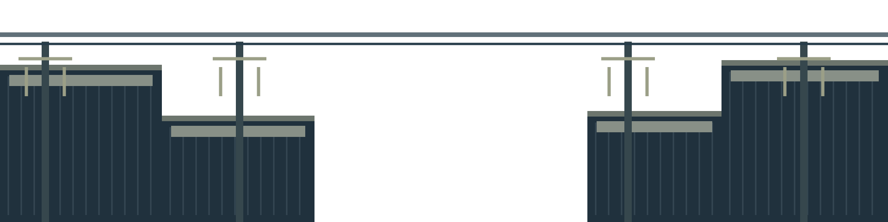
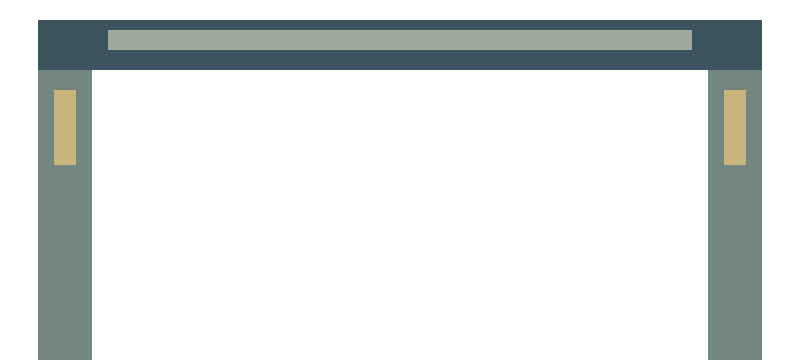
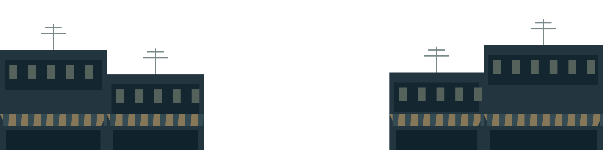
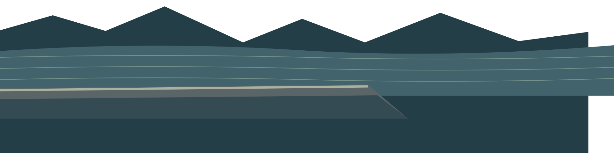
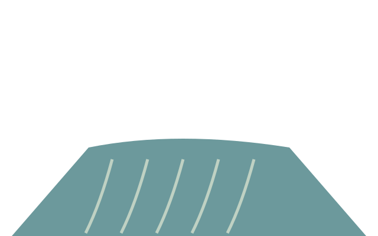
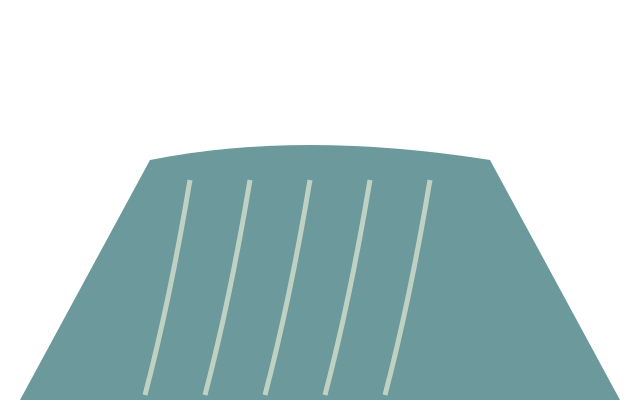
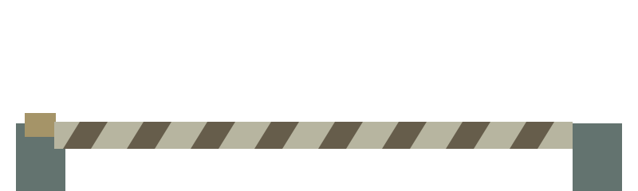
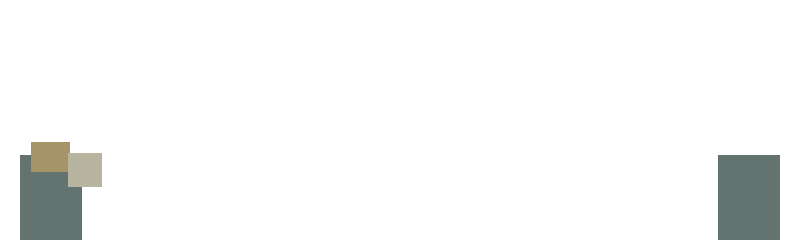

Chapter art and equipment states · pending review
L1 · static state review

signal-restored-v1.svg · 120×200approach-marker-v1.svg · 120×200
crossing-blocked-v1.svg · 320×96L2 · static state review

env-l2-midground-v1.svg · 1050×262
intake-inactive-v1.svg · 320×144intake-active-v1.svg · 320×144recovery-inactive-v1.svg + reused haulerrecovery-active-v1.svg + reused haulerL3 · static state review

env-l3-midground-v1.svg · 1050×262relay-dormant-v1.svg · 120×200relay-connecting-v1.svg · 120×200relay-linked-v1.svg · 120×200L4 · static state review

env-l4-reservoir-v1.svg · 1050×262env-l4-route-v1.svg · 1050×262spillway-closed-v1.svg · 288×180spillway-open-v1.svg · 288×180
spillway-water-low-v1.svg · 288×180
spillway-water-high-v1.svg · 288×180
barrier-closed-v1.svg · 320×96
barrier-open-v1.svg · 320×96controller-active-v1.svg · 120×200controller-disabled-v1.svg · 120×200Bus body · 90px wideBus body · 180px wideL5 · static state review
env-l5-midground-v1.svg · 1050×262env-l5-dawn-v1.svg · 1050×262civic-node-dormant-v1.svg · 120×200civic-node-linked-v1.svg · 120×200civic-node-public-active-v1.svg · 120×200